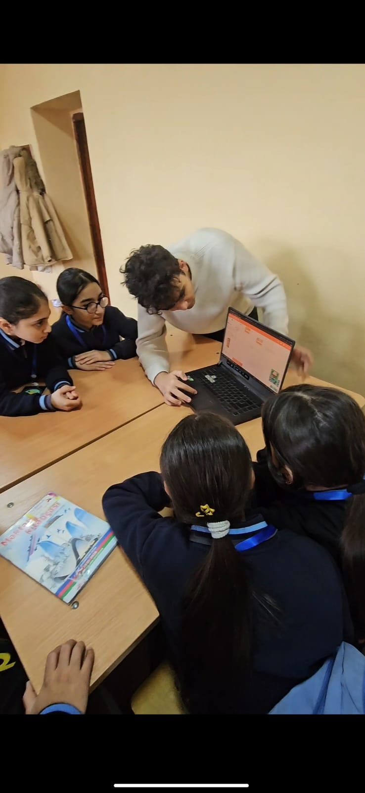
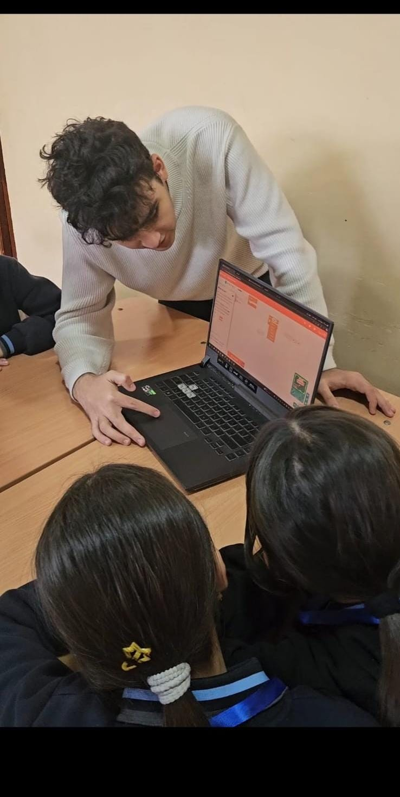

My Portfolio Projects
Project 1: Logic Gates Circuit Design
Description: These pictures are part of our **Project 1** assignment. This is a foundational electronics circuit built on a breadboard as part of the Electrical Engineering curriculum. Using this setup, we successfully studied and demonstrated fundamental logic functions, including **NOT, AND, OR, NAND, and NOR gates**.


Project 2: School Visit
Description: This is my second project. In this project, we visited a local school to share professional information about Bugarena and ADA University. Our goal was to inspire students and provide them with insights into engineering and university opportunities.


View Project Documentation